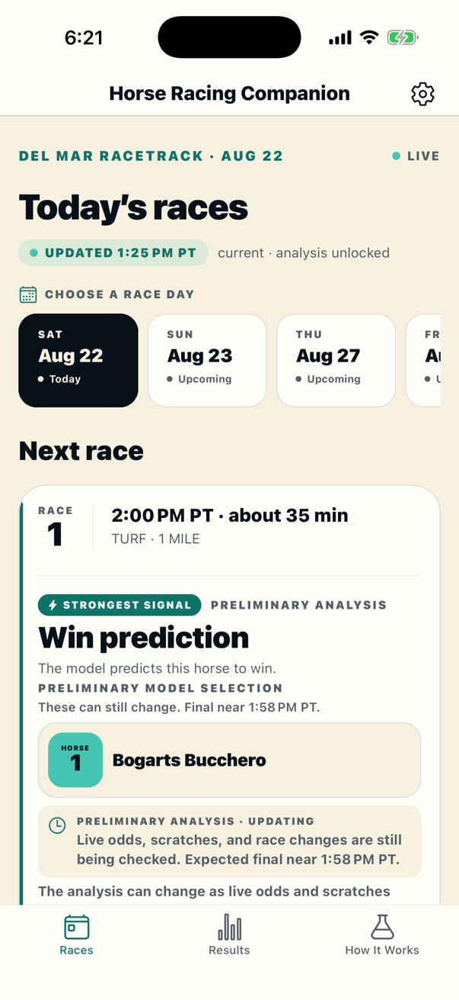
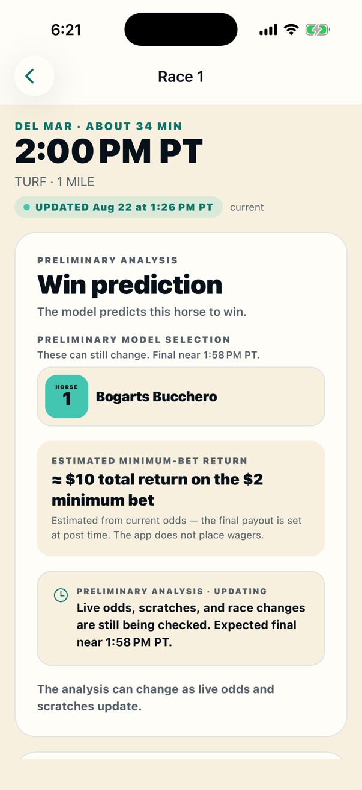

The market’s view of the race
Morning-line odds provide a starting point. Current odds help show whether the race has changed as post time approaches.
Horse Racing Companion turns public odds, Del Mar history, and live race-day updates into one clear recommendation for each race. You get the bet, the horse numbers, and exactly what to say at the window.
Your first three racing days are free. Then one $19.99 season pass — one payment, no subscription, no automatic renewal.

THE ANALYSIS
The app starts with the public race card, considers relevant Del Mar history, removes scratched horses, and watches the odds as post time gets closer. It then turns that information into one practical ticket.
Morning-line odds provide a starting point. Current odds help show whether the race has changed as post time approaches.
Past Del Mar results for each horse, its trainer and jockey, their pairing, and the post position on this surface and distance add context. A short track record is treated cautiously.
Scratched horses come out of the comparison. The remaining field is checked for a horse—or a small group—that stands out.
The app keeps checking the race as post time approaches. A preliminary pick can change when the odds, field, or other race-day information changes.
You can see the reason behind every pick. Open a recommendation to review the information that mattered, then check past picks beside the official results. The exact formula remains proprietary, and no analysis can guarantee a winner or a profit.
FROM ANALYSIS TO ACTION
You don't need to know the jargon or sort through every number yourself. The app keeps the pick, horse numbers, total cost, timing, and explanation in one place.
Open today’s card or look ahead to another scheduled day. The next race and its post time stay easy to find.
Preliminary means live information can still change the ticket. Final means the race-day calculation is complete. When one horse or group clearly stands out, the pick is marked as a strong play. A genuinely unclear race may show no bet.
The app gives you the exact track, race, amount, bet type, and program numbers to say — or just show — to the teller.

BACKED BY RESEARCH AND DATA
The program number is the horse number shown on track screens and used on the betting ticket—not a predicted finishing position.
Each pick shows a rough payout on the minimum bet if the ticket wins, based on the current odds.
Turn on optional reminders and your iPhone gives you a heads-up before the first post. Scheduled on your phone, never from a server.
A preliminary recommendation tells you what is still updating and when the final calculation is expected.
HONEST ABOUT UNCERTAINTY
The app tells you when a recommendation can still change and when it is final. After the race, it keeps the pick beside the official result so you can see how it did.
The horse numbers, bet type, amount, and betting-window wording are ready to review.
Odds, scratches, or other live information still need to settle.
The app doesn't force a ticket when no horse or small group stands out.
SIMPLE PRICING
Zero dollars for up to three racing days — every race, complete recommendations — so you can judge the analysis before paying anything.
After that, a single Del Mar season pass ($19.99, one time) unlocks recommendations for the rest of the season. It's a one-time in-app purchase, not a subscription: nothing renews automatically, and Restore Purchases brings it to a new device. Race cards, odds, official results, and the How It Works page stay free without a pass.
FAQ
No. Horse Racing Companion does not accept deposits, create a wagering account, transmit wagers, or connect to a betting operator. You decide whether to place a wager yourself.
No. The confidence meter shows how clearly the available information supports the prediction — steadier evidence fills more of the meter. It is not a predicted win percentage and does not guarantee an outcome.
The current prediction model uses public morning-line odds and past Del Mar results — each horse’s local record, its trainer and jockey, their pairing, and post-position performance by surface and distance — to rank the active horses. Scratches determine who remains in the comparison. Closer to the race, current odds for the leading selection are checked and can affect the final ticket.
Live odds, scratches, and race changes can alter the calculation. The status tells you what's still updating and when the recommendation is expected to be final.
No. Horse Racing Companion is independent and is not affiliated with, endorsed by, or sponsored by Del Mar Thoroughbred Club.
RACE RESPONSIBLY
For adults of legal wagering age and only where wagering is lawful. If gambling is causing concern, visit the National Council on Problem Gambling for confidential help resources.